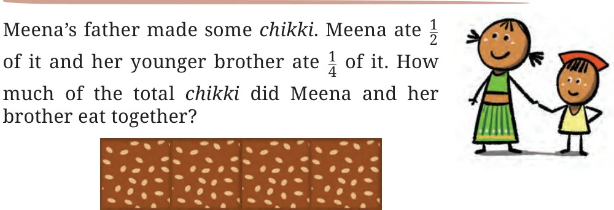
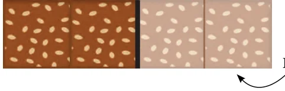
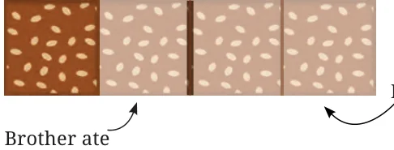
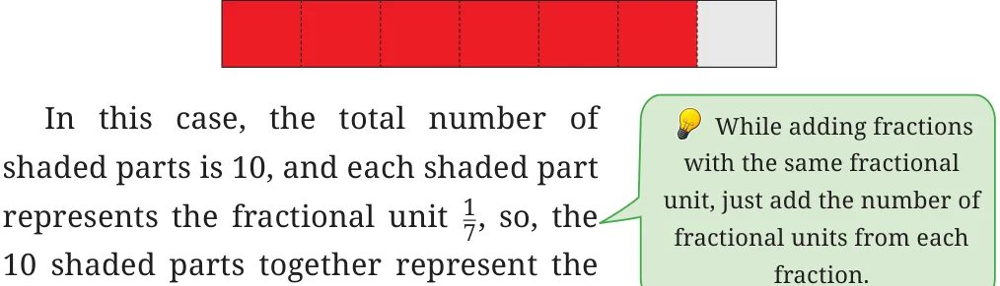
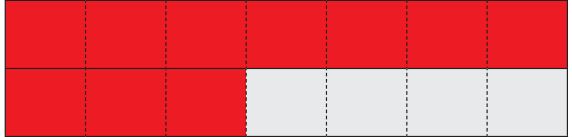

<!DOCTYPE html>
<html lang="en">
<head>
<meta charset="UTF-8">
<meta name="viewport" content="width=device-width,initial-scale=1">
<title>7.8 Addition and Subtraction of Fractions — Fractions</title>
<meta name="description" content="Class 6 Mathematics · Fractions · 7.8 Addition and Subtraction of Fractions">
<link rel="icon" href="data:image/svg+xml,<svg xmlns='http://www.w3.org/2000/svg' viewBox='0 0 100 100'><text y='.9em' font-size='90'>📘</text></svg>">
<link rel="stylesheet" href="../../../assets/book.css">
<link rel="stylesheet" href="https://cdn.jsdelivr.net/npm/katex@0.16.11/dist/katex.min.css" crossorigin="anonymous">
</head>
<body>
<header class="topbar">
<div class="topbar-in">
  <div class="crumb">
    <span class="c1"><a href="../../../index.html">Library</a> · <a href="../../index.html">Class 6 Mathematics</a></span>
    <span class="c2">Fractions · 7.8 Addition and Subtraction of Fractions</span>
  </div>
  <a class="tb-btn" data-nav="prev" href="../../07-fractions/19-figure-it-out/index.html" title="Figure it Out">←</a>
  <details class="drawer"><summary class="tb-btn" title="Sections in this chapter">☰</summary>
<div class="drawer-panel"><div class="dh">Fractions</div><a href="../01-chapter-opener/index.html">Chapter opener</a><a href="../02-fractional-units-and-equal-shares-7.1/index.html">7.1 Fractional Units and Equal Shares</a><a href="../03-figure-it-out/index.html">Figure it Out</a><a href="../04-fractional-units-as-parts-of-a-whole-7.2/index.html">7.2 Fractional Units as Parts of a Whole</a><a href="../05-figure-it-out/index.html">Figure it Out</a><a href="../06-measuring-using-fractional-units-7.3/index.html">7.3 Measuring Using Fractional Units</a><a href="../07-figure-it-out/index.html">Figure it Out</a><a href="../08-marking-fraction-lengths-on-the-number-line-7.4/index.html">7.4 Marking Fraction Lengths on the Number Line</a><a href="../09-figure-it-out/index.html">Figure it Out</a><a href="../10-mixed-fractions-7.5/index.html">7.5 Mixed Fractions</a><a href="../11-figure-it-out/index.html">Figure it Out</a><a href="../12-figure-it-out/index.html">Figure it Out</a><a href="../13-figure-it-out/index.html">Figure it Out; 7.6 Equivalent Fractions</a><a href="../14-figure-it-out/index.html">Figure it Out</a><a href="../15-figure-it-out/index.html">Figure it Out</a><a href="../16-figure-it-out/index.html">Figure it Out</a><a href="../17-figure-it-out/index.html">Figure it Out</a><a href="../18-figure-it-out/index.html">Figure it Out; 7.7 Comparing Fractions</a><a href="../19-figure-it-out/index.html">Figure it Out</a><a href="../20-addition-and-subtraction-of-fractions-7.8/index.html" aria-current="page">7.8 Addition and Subtraction of Fractions</a><a href="../21-figure-it-out/index.html">Figure it Out</a><a href="../22-figure-it-out/index.html">Figure it Out</a><a href="../23-figure-it-out/index.html">Figure it Out</a><a href="../24-a-pinch-of-history-7.9/index.html">7.9 A Pinch of History</a><a href="../25-solutions/index.html">CHAPTER 7 — SOLUTIONS</a></div></details>
  <a class="tb-btn" data-nav="next" href="../../07-fractions/21-figure-it-out/index.html" title="Figure it Out">→</a>
  <button class="tb-btn" data-theme-toggle title="Toggle light / dark" aria-label="Toggle light or dark theme">◐</button>
</div>
<div class="progress"><span style="width:64.9%"></span></div>
</header>
<main class="wrap">
<div class="sec-head">
  <p class="eyebrow"><a href="../index.html">Chapter 7 · Fractions</a></p>
  <h1>7.8 Addition and Subtraction of Fractions</h1>
  <p class="sec-meta">Textbook pages 25–29 · 11 figures</p>
</div>
<article class="prose">
<figure class="fig wide"></figure>
<p>We can arrive at the answer by visualising it. Let us take a piece of chikki and divide it into two halves first like this. Meena ate \(\frac{1}{2}\) of it as shown in the picture.</p>
<figure class="fig"></figure>
<aside class="sidenote"><p>Meena ate</p></aside>
<p>Let us now divide the remaining half into two further halves as shown. Each of these pieces is \(\frac{1}{4}\) of the whole chikki. Meena’s brother ate \(\frac{1}{4}\) of the whole chikki, as is Meena ate shown in the picture. The total chikki eaten is \(\frac{1}{2}\) (by Meena) and \(\frac{1}{4}\) (by her brother) The total chikki eaten</p>
<figure class="fig"></figure>
<figure class="fig"></figure>
<div class="mathblock"><p>\(= \frac{1}{2} + \frac{1}{4}\)</p></div>
<p>\(= \frac{1}{4} + \frac{1}{4} + \frac{1}{4}\)</p>
<div class="mathblock"><p>\(= 3 \times \frac{1}{4} = \frac{3}{4}\) .</p></div>
<p>How much of the total chikki is remaining?</p>
<h3 id="s-adding-fractions-with-the-same-fractional-unit-or-denomina">Adding fractions with the same fractional unit or denominator</h3>
<p>Example: Find the sum of \(\frac{2}{5}\) and \(\frac{1}{5}\) .</p>
<p>Let us represent both using the rectangular strips. In both fractions, the fractional unit is the same \(\frac{1}{5}\) , so, each strip will be divided into 5 equal parts.</p>
<p>So \(\frac{2}{5}\) will be represented as -</p>
<figure class="fig table-fig"></figure>
<p>And \(\frac{1}{5}\) will be represented as -</p>
<figure class="fig table-fig"></figure>
<p>Adding the two given fractions is the same as finding out the total number of shaded parts, each of which represent the same fractional</p>
<div class="mathblock"><p>unit \(\frac{1}{5}\) .</p></div>
<p>In this case, the total number of shaded parts is 3. Since, each shaded part represents the fractional unit \(\frac{1}{5}\) , we see that the 3 shaded parts together represent the fraction \(\frac{3}{5}\) .</p>
<figure class="fig table-fig"></figure>
<p>Therefore, \(\frac{2}{5} + \frac{1}{5} = \frac{3}{5}\) ?</p>
<p>Example: Find the sum of \(\frac{4}{7}\) and \(\frac{6}{7}\) . Let us represent both again using the rectangular strip model. Here in both fractions, the fractional unit is the same, i.e., \(\frac{1}{7}\) , so each strip will be divided into 7 equal parts. Then \(\frac{4}{7}\) will be represented as -</p>
<figure class="fig table-fig"></figure>
<p>and \(\frac{6}{7}\) will be represented as -</p>
<figure class="fig table-fig wide"></figure>
<p>fraction \(\frac{10}{7}\) as seen here.</p>
<figure class="fig table-fig"></figure>
<p>Therefore, \(\frac{4}{7} + \frac{6}{7} = \frac{10}{7}\)</p>
<div class="mathblock"><p>\(= 1 + \frac{3}{7}\)</p><p>\(= 1 \frac{3}{7}\) .</p></div>
<figure class="fig table-fig"></figure>
<p>Try adding \(\frac{4}{7} + \frac{6}{7}\) using a number line. Do you get the same answer?</p>
<h3 id="s-adding-fractions-with-different-fractional-units-or-denomi">Adding fractions with different fractional units or denominators</h3>
<p>Example: Find the sum of \(\frac{1}{4}\) and \(\frac{1}{3}\) .</p>
<p>To add fractions with different fractional units, first convert the fractions into equivalent fractions with the same denominator or</p>
<p>fractional unit. In this case, the common denominator can be made \(3 \times 4 = 12\), i.e., we can find equivalent fractions with fractional unit \(\frac{1}{12}\) . Let us write the equivalent fraction for each given fraction.</p>
<p>\(\frac{1}{4} = \frac{1 \times 3}{4 \times 3} = \frac{3}{12}\) , \(\frac{1}{3} = \frac{1 \times 4}{3 \times 4} = \frac{4}{12}\) .</p>
<p>Now, \(\frac{3}{12}\) and \(\frac{4}{12}\) have the same fractional unit, i.e., \(\frac{1}{12}\) . Therefore, \(\frac{1}{4} + \frac{1}{3} = \frac{3}{12} + \frac{4}{12} = \frac{7}{12}\) . This method of addition, which works for adding any number of fractions, was first explicitly described in general by Brahmagupta in the year 628 CE! We will describe the history of the development of fractions in more detail later in the chapter. For now, we simply summarise the steps in Brahmagupta’s method for addition of fractions.</p>
<p>Brahmagupta’s method for adding fractions</p>
<ul class="qlist">
<li><span class="mk">1.</span><span class="lt">Find equivalent fractions so that the fractional unit is common</span></li>
</ul>
<p>for all fractions. This can be done by finding a common multiple of the denominators (e.g., the product of the denominators, or the smallest common multiple of the denominators).</p>
<ul class="qlist">
<li><span class="mk">2.</span><span class="lt">Add these equivalent fractions with the same fractional units.</span></li>
</ul>
<p>This can be done by adding the numerators and keeping the same denominator.</p>
<ul class="qlist">
<li><span class="mk">3.</span><span class="lt">Express the result in lowest terms if needed.</span></li>
</ul>
<p>Let us carry out another example of Brahmagupta’s method. Example: Find the sum of \(\frac{2}{3}\) and \(\frac{1}{5}\) . The denominators of the given fractions are 3 and 5. The lowest common multiple of 3 and 5 is 15. Then we see that \(\frac{2}{3} = \frac{2 \times 5}{3 \times 5} = \frac{10}{15}\) , \(\frac{1}{5} = \frac{1 \times 3}{5 \times 3} = \frac{3}{15}\) .</p>
<p>Therefore, \(\frac{2}{3} + \frac{1}{5} = \frac{10}{15} + \frac{3}{15} = \frac{13}{15}\) .</p>
<p>Example: Find the sum of \(\frac{1}{6}\) and \(\frac{1}{3}\) . The smallest common multiple of 6 and 3 is 6. \(\frac{1}{6}\) will remain \(\frac{1}{6}\) . \(\frac{1}{3} = \frac{1 \times 2}{3 \times 2} = \frac{2}{6}\) Therefore, \(\frac{1}{6} + \frac{1}{3} = \frac{1}{6} + \frac{2}{6} = \frac{3}{6}\) . The fraction \(\frac{3}{6}\) can now be re-expressed in lowest terms, if desired. This can be done by dividing both the numerator and denominator by 3 (the biggest common factor of 3 and 6): \(\frac{3}{6} = \frac{3 \div 3}{6 \div 3} = \frac{1}{2}\) .</p>
<p>Therefore, \(\frac{1}{6} + \frac{1}{3} = \frac{1}{2}\) .</p>
</article>
<nav class="pager"><a class="" data-nav="prev" href="../../07-fractions/19-figure-it-out/index.html"><span class="dir">← Previous</span><span class="t">Figure it Out</span><span class="ch">Fractions</span></a><a class="nx" data-nav="next" href="../../07-fractions/21-figure-it-out/index.html"><span class="dir">Next →</span><span class="t">Figure it Out</span><span class="ch">Fractions</span></a></nav>
</main><footer class="site">Generated from the source textbook PDFs · text, figures and exercises belong to their respective publishers.</footer><script defer src="https://cdn.jsdelivr.net/npm/katex@0.16.11/dist/katex.min.js" crossorigin="anonymous"></script>
<script defer src="https://cdn.jsdelivr.net/npm/katex@0.16.11/dist/contrib/auto-render.min.js" crossorigin="anonymous"
  onload="renderMathInElement(document.body,{delimiters:[
    {left:'\\(',right:'\\)',display:false},
    {left:'$$',right:'$$',display:true},
    {left:'\\[',right:'\\]',display:true}],throwOnError:false,ignoredTags:['script','noscript','style','textarea','pre','code']})"></script>
<script src="../../../assets/book.js"></script>
<script defer src="../../../../assets/search.js?v=1789782769"></script>
<script defer src="../../../../assets/screenshot.js?v=1789782769"></script>
</body>
</html>
